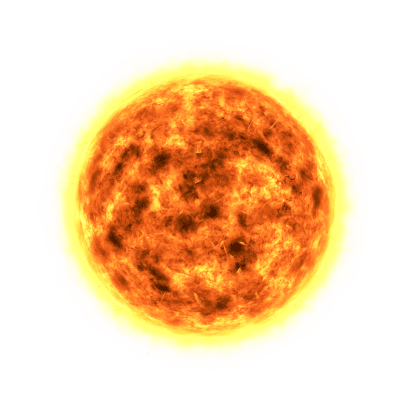

Sun
The Sun is a massive, glowing ball of hot gas at the center of our solar system, powered by nuclear fusion and responsible for light, heat, and life on Earth. At about 4.6 billion years old, it quietly converts hydrogen into energy every second—while somehow making it look effortless. Think of it as the universe’s original overachiever: 99.8% of the solar system’s mass and still showing up every morning like it’s no big deal.
